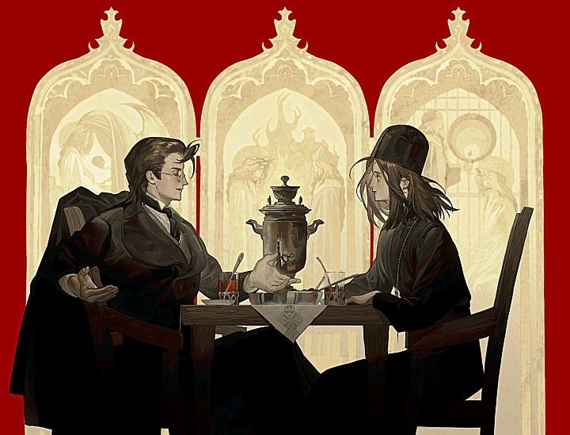
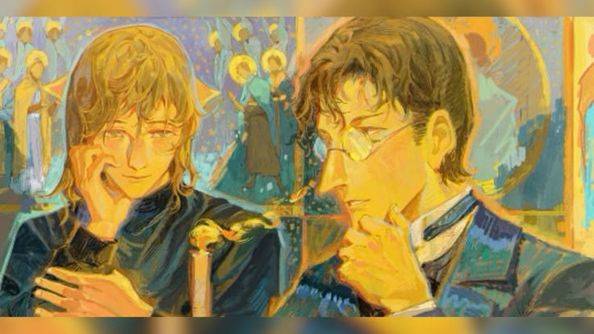
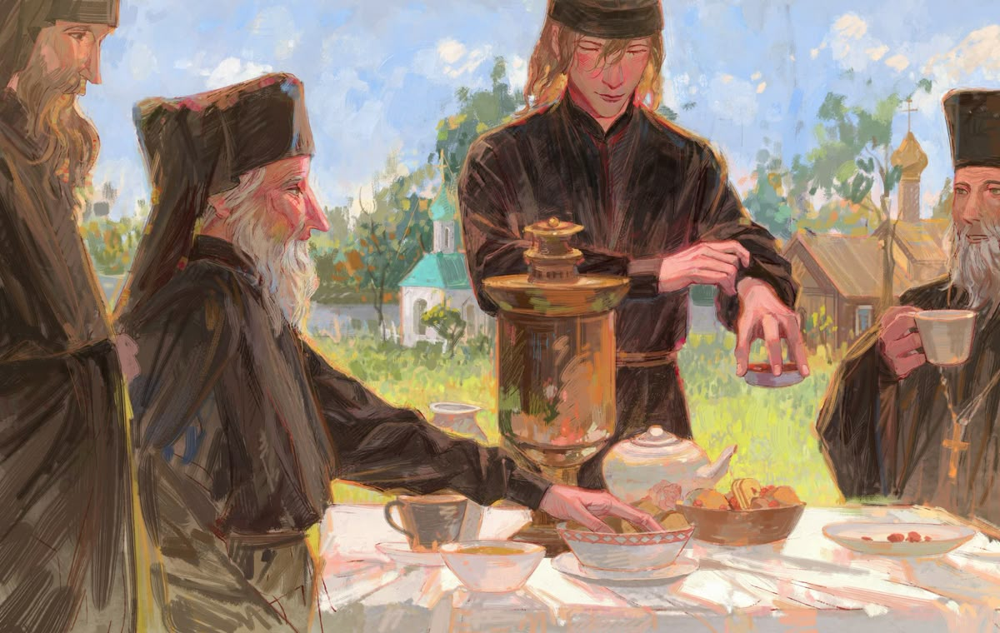

"Братья Карамазовы" — это величайшее произведение Фёдора Михайловича Достоевского, погружающее в мир глубочайших философских размышлений и моральных дилемм. Этот роман не только один из самых масштабных в русской литературе, но и ключевой текст для понимания духовных и этических поисков человечества.
Достоевский рассказывает историю семьи Карамазовых — троих братьев, каждый из которых представляет собой уникальную личность, с противоположными взглядами на жизнь и мораль. Мы встречаем старшего сына, Дмитрия, страстного и импульсивного человека, склонного к крайностям; Ивана, рационалиста, задающегося вечными вопросами о Боге и существовании зла; и Алексея, младшего, добродетельного и духовного искателя, воплощающего христианскую веру.
Отношения между братьями, а также с их отцом, Фёдором Павловичем, безнравственным и циничным человеком, становятся центром сюжета, наполненного конфликтами, поисками смысла жизни, любви, предательства и прощения. Достоевский затрагивает вопросы, которые волнуют каждого: что такое свобода воли? Каково место человека в этом мире, где царят страдания и несправедливость? Существует ли Бог, и если да, то какова Его роль в судьбе человека?
Каждая глава романа — это не просто история, это настоящее философское исследование, в котором Достоевский обнажает самые глубокие слои человеческой души. Его персонажи — это не просто вымышленные люди, это воплощения разных аспектов человеческого существования, их душевные терзания, внутренние борьба и поиски.
"Братья Карамазовы" — это не просто книга о семье и преступлении, это произведение, заставляющее задуматься о смысле жизни и вечных вопросах, которые остаются актуальными и в наше время. Это роман, который не оставит равнодушным никого, кто готов погрузиться в его философскую глубину и эмоциональную мощь. Если вы ищете книгу, которая бросает вызов вашему мировоззрению и заставляет осмысливать самые важные вопросы о жизни, любви и вере, то "Братья Карамазовы" — это произведение, которое обязательно стоит прочитать.
